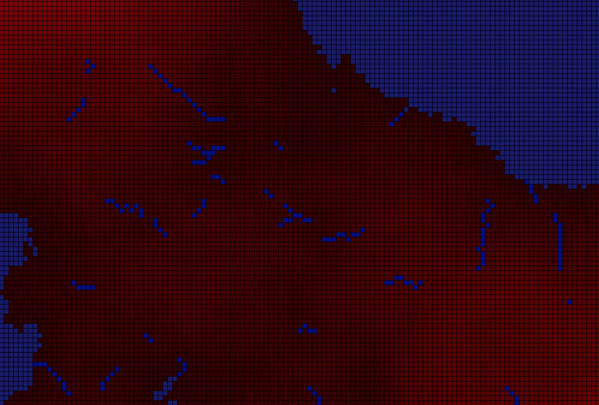

I have a passion for programming, software development, and cybersecurity. In my free time, I read books and code.
I'm currently seeking internship opportunities in software engineering! If you think I'd be a good fit, please reach out at kempton.maillett@maine.edu.
I contributed to the Scalable and Portable Infrastructure for Cybersecurity Education project (SPICE). SPICE is a flexible, remotely accessible infrastructure that leverages public cloud, data center, and portable computing resources. It was developed to support a variety of cybersecurity education activities. You can read more about the project here.
I worked closely with groupmates to implement centralized logging and monitoring systems on Linux and Windows machines. For scalability, we used AWS to host virtual machines running Wazuh, Elastic Stack, and Kibana for a web interface that displays all kinds of logging/monitoring info. Finally, we wrote Ansible playbooks to automate agent deployment.
We met weekly over the 2021 summer to coordinate as a team, communicate progress/challenges, and delegate different tasks. I primarily took notes during these meetings and made clear the most urgent action items in our documentation.
I joined UMCST in the spring of 2021. That summer, I got involved with the SPICE project to contribute to the team's infrastructure. Recently, I was elected Student Relations Officer and captained a team of three in the Hivestorm cybersecurity competition. I'm excited to lead our team's application security division for the 2022 Northeast Collegiate Cyber Defense Competition (NECCDC). You can read more about UMCST here.
This 2021 fall semester our team saw record growth and attendance at our weekly introductory labs. We're looking forward to sending a full roster to NECCDC 2022!
With HTML and CSS, I built this personal portfolio site to document my professional experience, software projects, and extracurricular activities. This site is hosted via GitHub pages, and changes automatically go live as I push with git.
For a Python programming course at UMaine, we were given a Python file that would generate a matrix which contained related elevation values in each cell. I used tkinter to generate a terrain overlay based on those given elevation values. I implemented an ocean level, a gradient grass color, rivers that flow recursively downhill, and beaches where grass and ocean meet.